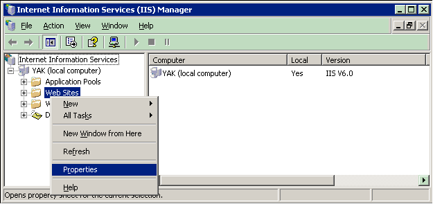

Installing WebDNA for IIS 6.x (Windows 2003)
After running the WebDNA install program, you will need to execute the following steps to manually configure IIS6 using the Microsoft IIS "Internet Information Services Manager" application.
The following instructions guide you through configuring a suffix mapping (so IIS knows to send .tpl files through WebDNA).
First, open the Microsoft IIS 'Internet Information Services Manager'.
Expand the left tree view and 'right click' on the 'Web Sites' folder, select 'Properties', As shown here:

In the 'Web Site Properties' dialog, select the 'Home Directory' tab and set 'Execute Permissions' to 'Scripts Only':

Click the 'Configuration' Button ...
In the 'Application Configuration' dialog, select the 'Mappings' tab and click the 'Add' button:

In the '...Extension Mapping' dialog...
Set the 'Executable' path to the $WebCat.dll file
The $WebCat.dll is usually located here -"c:\Inetpub\scripts\WebCatalogEngine\$WebCat.dll"
Set 'Extension' to '.tpl'

Click 'OK' to exit '...Extension Mapping' dialog
Repeat the 'Add' step for any additional extentions you want mapped to WebDNA. At the very least you should add '.tpl' and '.db' file mappings.
Click 'OK' to exit 'Application Configuration' dialog
Click 'OK' to exit 'Web Site Properties' dialog
Back in the IIS 'Internet Informatin Services Manager' application...
In the left tree view, 'right click', on the 'Web Services' folder, select 'Add a new Web Service Extension'.
In the 'New Web Service Extension' dialog...
Set Extension Name (optional - usually 'WebCat')
Click 'Add' button to add path to $WebCat.dll (Using the same path you entered before)
Check box 'Set extension status to allowed'
The dialog should now look something like this:

Click 'OK' to exit the 'New Web Service Extension' dialog
Back in the IIS 'Internet Informatin Services Manager' application...
At root of the left tree view, 'right click' on the node labeled (local computer)...
Select All Tasks –> Save Config to Disk, as shown below:

Lastly, repeat the last step, choosing, 'Restart IIS'